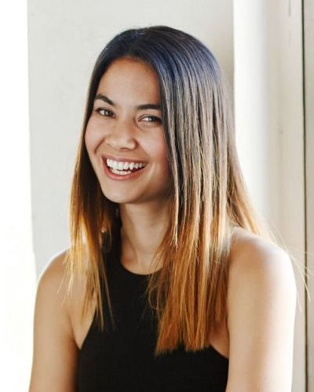

Margaret Hamilton
Margaret Elaine Hamilton (1936-) is an American computer scientist, systems engineer, and business owner. She was director of the Software Engineering Division of the MIT Instrumentation Laboratory, which developed on-board flight software for NASA's Apollo program.

Melanie Perkins
Melanie Perkins is the visionary co-founder and CEO of Canva, a groundbreaking graphic design platform valued at $40 billion. Beginning her entrepreneurial journey with Fusion Books, Perkins recognized the need for user-friendly design tools, laying the foundation for Canva in 2013. Overcoming initial skepticism, Canva boasts 60 million monthly users globally, including major companies like Intel and Zoom. Perkins, along with co-founder Cliff Obrecht, holds an estimated 18% stake, committing over 80% to the charitable Canva Foundation. Passionate about democratizing design, Canva's success challenges traditional graphic design models. Perkins, born in 1987 in Perth, Australia, has been recognized for her achievements, featuring on Forbes' 'World's 100 Most Powerful Women' list and earning accolades such as the 'Most Powerful Women in Business 2023.' Beyond Canva, she produced the TV series 'On The Brink' and founded Fusion Books, showcasing her multifaceted impact on business and media.